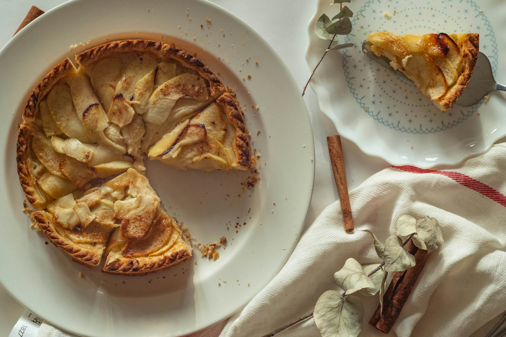

Home
Apple Pie

Description
Apple pie is a baked dessert consisting of a pastry crust filled with cooked apples, typically seasoned with sugar, cinnamon, and other spices.
It's a popular dessert, especially in English-speaking countries, and is often served warm or cold, sometimes with whipped cream, ice cream, or cheese.
Ingredients
- Apples
- Unsalted butter
- All-purpose flour
- Sugar
- Brown sugar
- Double-crust pie pastry, thawed
Steps
- Prepare the ingredients and preheat the oven.
- Make a paste by mixing flour, melted butter, sugar & water over a heating pan.
- Press one crust into a pie plate. Lay all the sliced apples on the bottom crust.
- Assemble the top crust by making the lattice crust.
- Pour sugar-butter mixture over lattice crust, making sure it seeps over sliced apples.
- Bake the pie in a preheated oven until the apples are soft and the crust is golden brown.